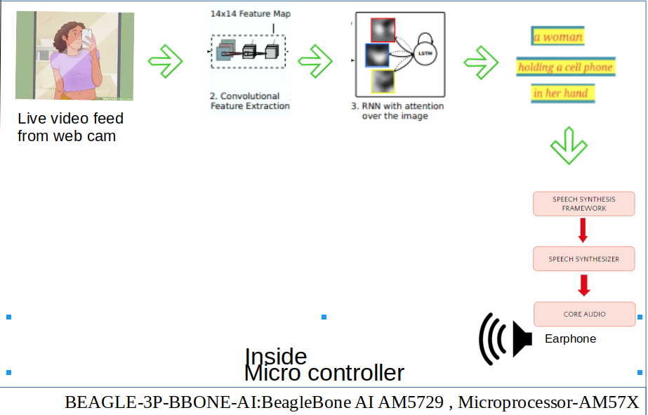

Blindness makes life challenging for blind people. The estimated number of visually impaired people is 285 million in the world. They are dependent on others to get
information about their surroundings. So, we are trying to solve this social problem by making a device which can inform them about the real world via audio. We will make a device which will produce the real time frames of images from the camera at certain frame frequency and will produce a relevant audio via captions. People will be aware of obstacles in front of them and other relevant details will be retrieved via the captions. This project has the scope of predicting the speed of vehicles in traffic as well so that blind people are able to cross roads safely and independently. This device can be made compact enough for day to day usage with comfort. Hence, it revives the sense of vision for visually impaired ones.
There are more than 285 million people in the world who cannot see and they are dependent on others to have an idea about their surroundings. So, there is a need for a device in market which can make them aware about their surroundings.
For our Business serviceable, addressable markets are organizations meant for caring these blind people as well as the patients themselves. We have met with many blind people and they desperately need a device that can help them in understanding about their surroundings.
There are very less number of gadgets in the market which can help Blind person in day to day life. OrCam MyEye, eSight, vOICe are available in market but OrCam works for item recognition and it only helps in recognition of colour, images, text and similar things. eSight is limited to legally blind .vOICe which converts grayscale images into musical soundscapes. Cost of OrCam is $2500 to $ 3500 while cost of eSight $10000 which a normal person cannot afford.
We did not find any device that can assist blind persons in real time. So, our team is working on a model that will give information of real time. We are also trying to make a cost effective device so normal person can take benefit of it.
Till now, after meeting with these people we have found that device should be light, user friendly and should not include too many buttons. We will make a team for survey which will contact with the Blind Care Homes, NGOs for any further modification. We will also include an audio based feedback and suggestion form on our website.
For our device, users are visually impaired people and customers can be these people or their friends, relatives, doctors, visual Impairment care centre. We will make a website for our device. So that user can order it online. Our salesman will contact with NGO, Visual impaired Care Centre and other related organizations.
This model will provide real time information of surroundings to the blind person through audio. The device will capture the video and convert it into audio so that blind people can be aware about their surroundings.
There are very less products in the market for Blind person. OrCam is working on image recognition. First, users have to click an image using the device and then device will recognise and give information about that image. eSight is for legally blind it captures everything the user is looking at then enhances the video feed and display it on two, OLED screen in front of the user's eyes. vOICe converts grayscale images into musical soundscapes. Our device will capture the real time video and convert it into captions using time frames of video and produce a most relevant audio which will describe the surroundings.
There are no products in the market which can give real time audio information about the surroundings. There are very less number of similar products for blind person in the market. OrCam is focused on image recognition. First user have to focus on the image using their finger. The camera then captures the image and processes the image giving information about that image.
It will give information about the images. Its cost is $ 2500 to $3500.while our model will give information about the surroundings.
eSight is for legally blind it captures everything the user is looking at then enhance the video feed and display it on two, OLED screen in front of the user's eyes. The cost is $10000.So, normally a person cannot afford and it is also only for legally blind. vOICe helps in recognizing the colour by converting image into grayscale images converts it into musical soundspace. It is having a PC ,so it is difficult to carry and it is also limited to images.
We are working on a model which can give real time information about the surroundings.